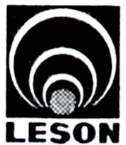
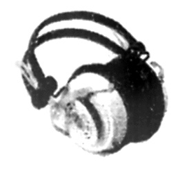
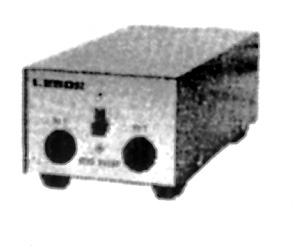
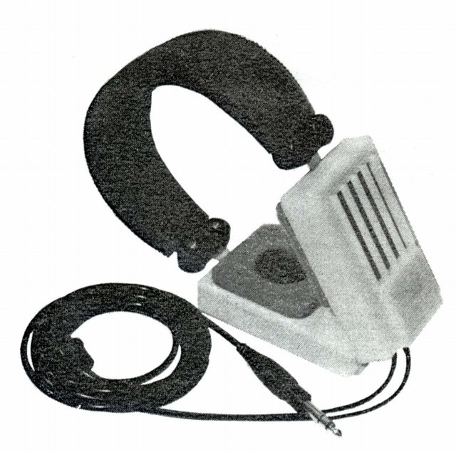

LESON（レソーン）
1970年代、一部のオーディオ誌に広告が掲載されていたメーカー。詳細は不明。ヘッドフォンに関してはコンデンサー型が得意だったようだ。他にはマイクの広告を見かけた。千葉県市川市にあったらしい。第３回の「ヘッドフォンフェスティバル」の参加企業の一つだった。
CSH-50


■価格
?不明
■型式 コンデンサー型
■振動板
■インピーダンス
■再生周波数帯域 20-25,000Hz
■許容入力
■感度
■コード
■重量
■発売 1973年頃?
■販売終了
■備考 静電容量 120pF
アダプター CAD-50
最大入力 5W
周波数 20-30,000Hz±2dB
歪率 0.15%以下（入力2W/8Ω）
1973年頃、「オーディオ日本」の名称で通信販売されていた。
運営していたのは「万成商事」という会社で、1971年頃には
ダイナミック型を5機種ほどやはり通販で販売していた。
こちらについては「その他のヘッドフォン」のページに記載している。
なお通販価格は送料別で\9,800。メーカーの正規価格は不明。
ちなみに同時に掲載されていたカートリッジなどは概ね30％オフ
ぐらいの価格が提示されていた。
EH-100

■価格 ?不明
■型式 エレクトレットコンデンサー型
■振動板
■インピーダンス
■再生周波数帯域 20-20,000Hz±4dB
■許容入力
52Vr.m.s
■感度
95ｄB/2Vr.m.s
■コード 2.5m
■重量 370g
■発売 1975年頃?
■販売終了
■備考
エレクトレットコンデンサー型だが
アダプター（トランス）が見あたらない。
イヤパッドに比べて大振りな左右のカプセルの
下部に小型トランスを内蔵しているものと思われる。
トランスをカプセルに内蔵したエレクトレット型には
トリオ（現 ケンウッド）やオーレックス（現 東芝）
があるが、こちらの方が古い。